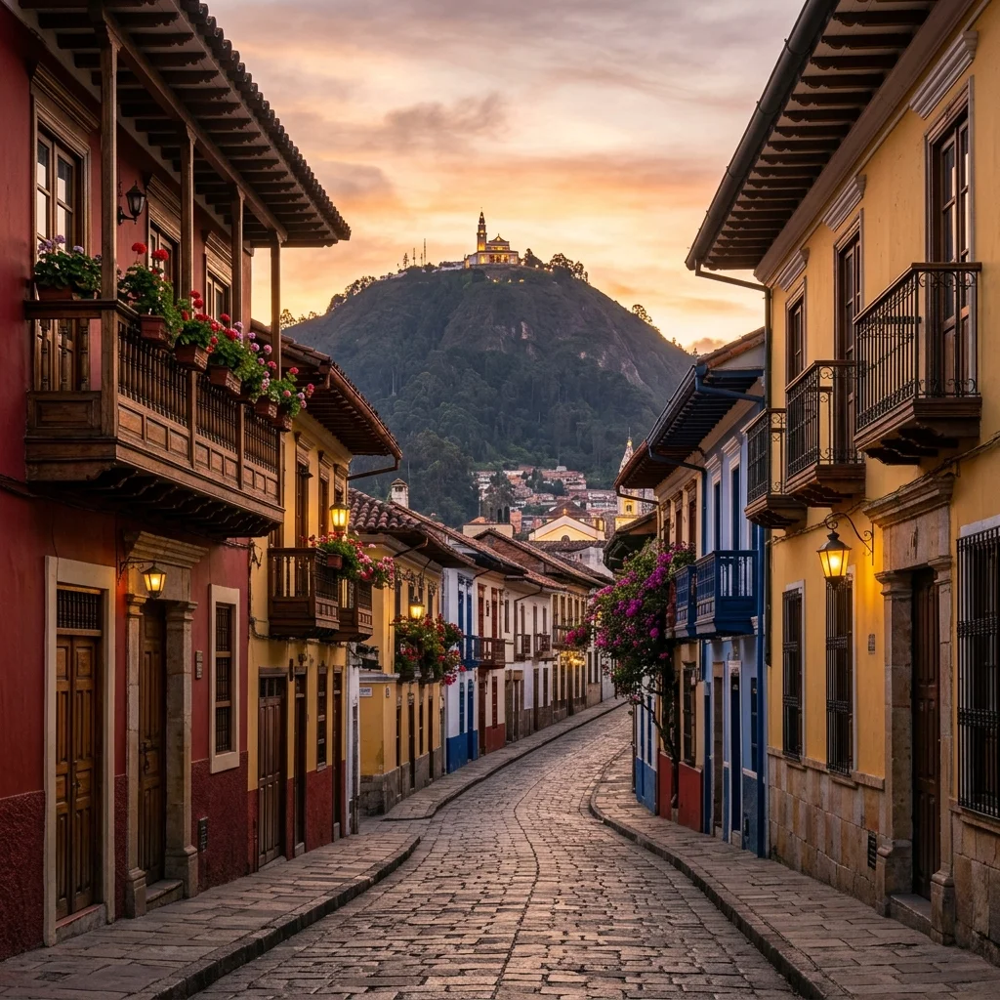
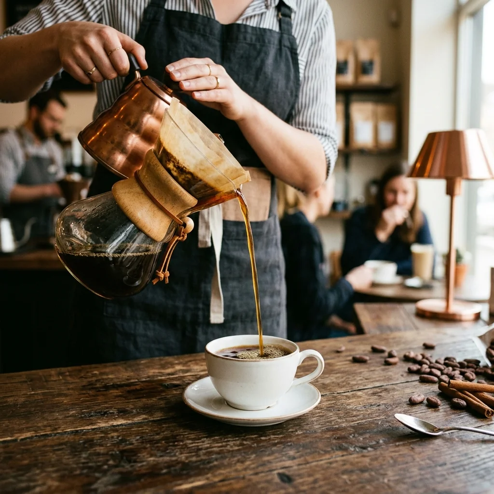

Descubra la riqueza cultural, la maestría de la orfebrería artesanal y los sabores más selectos de Colombia en una sofisticada travesía privada de un día completo por el centro histórico de Bogotá.
Recorrer una metrópoli vibrante pero compleja como Bogotá por cuenta propia puede convertirse en un laberinto de decisiones logísticas, tráfico impredecible, esperas en taquillas y la sensación de quedarse solo en la superficie. En Threads Travel creemos que descubrir el corazón cultural del país no debería exigirle sacrificar su tranquilidad. Por ello, hemos curado un día perfecto donde el caos de la ciudad se disuelve, permitiéndole conectar íntimamente con las esmeraldas más finas, el cacao de origen más puro y el legado del oro ancestral en total calma y sofisticación.
Cada momento de la travesía está diseñado bajo el estándar de confort y exclusividad de Threads, a una cómoda distancia a pie dentro del centro histórico.
Taller privado de joyería con maestros artesanos.
Inicie el día con un traslado privado premium hacia el distrito joyero de Bogotá. Participe en un taller exclusivo donde descubrirá el universo de las esmeraldas colombianas y creará su propia joya en plata guiado por orfebres expertos, conectando con un legado artesanal centenario.
Almuerzo de cocina contemporánea local.
Disfrute de un almuerzo seleccionado rigurosamente en el corazón histórico, donde los ingredientes tradicionales colombianos se expresan mediante técnicas modernas y un diseño elegante. Un espacio concebido para desacelerar y saborear la identidad del país.
Degustación sensorial y legado prehispánico.
Despierte sus sentidos con una cata privada de chocolate nacional y procesos artesanales. Posteriormente, realice una visita guiada privada por el icónico Museo del Oro, un viaje estético que revela la simbología de las civilizaciones precolombinas de Colombia.

Diseñamos y operamos esta travesía de forma 100% privada para garantizar la total intimidad y comodidad en el taller de orfebrería, la degustación de cacao y el ritual cafetero.
Respuestas a sus inquietudes para que planifique su travesía con absoluta tranquilidad.
No, ninguna. El taller privado de joyería está diseñado para principiantes. Será guiado paso a paso por un maestro orfebre profesional de forma totalmente segura. Aprenderá los fundamentos y soldará su propia pieza de plata con una esmeralda natural colombiana, llevándose un recuerdo único creado con sus propias manos.
Bogotá se encuentra a 2.600 metros de altitud y su clima suele cambiar rápidamente a lo largo del día. Recomendamos vestir "en capas", llevar una chaqueta abrigada e impermeable o un paraguas ligero. Dado que el itinerario incluye caminatas por las históricas calles empedradas de La Candelaria, es indispensable utilizar calzado cerrado, cómodo y con suela antideslizante.
Absolutamente. Al ser una experiencia 100% privada, podemos adaptar cada detalle a sus necesidades. Antes del viaje, su concierge validará si algún invitado presenta alergias, intolerancias alimentarias o preferencias vegetarianas/veganas para diseñar un almuerzo de autor y una inmersión de cacao totalmente seguras y personalizadas.